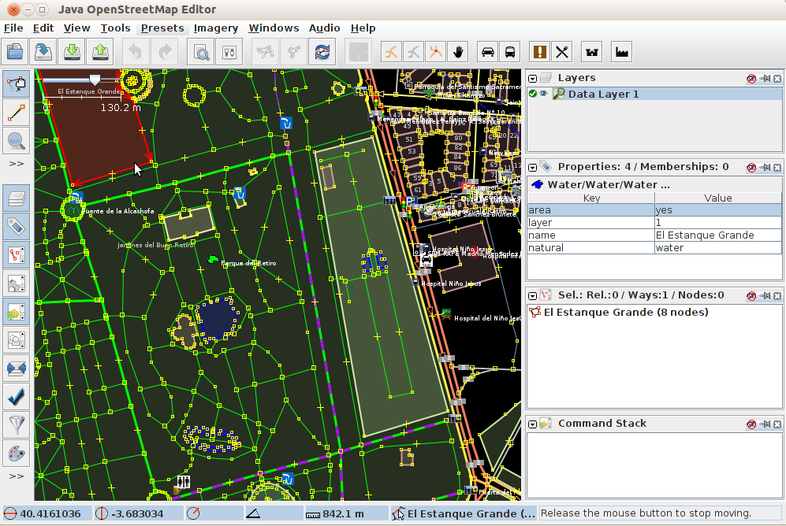

JOSM¶
Desktop Editor for OpenStreetMap data¶
JOSM is a feature rich, extensible, offline desktop editor for OpenStreetMap (OSM) data, written in Java.
It supports loading stand-alone GPX tracks and GPX track data as well as editing existing nodes (points), ways (lines), metadata tags (name/value information) and relations (ordered sequence of points and lines) from the OSM database. GPX tracks, are usually downloaded in advance from a GPS receiver or from other sources.
A number of specialised plugins have been written for JOSM, which are available for download and install.
{kind=link}
Core Features¶
Common GIS Desktop Interface tools:
Toolbar customization, View control (zoom, pan. etc), styles, icons and layers management.
Download and upload OSM vector data.
Open local data:
NMEA-0183 files: .nmea, .nme, .nma, .log, .txt
OSM files: .osm, .xlm, .osmbz2, .osmbz
OSM change file: .osc, .osc.bz2, .osc.bz, .osc.gz
images (.jpg)
Imagery:
Visualize basemaps from OSM, Bingsat, Lansat, MapBox satellite, MapQuest Open Aerial or any other WMS sources.
Editing Tools:
Nodes: merge, join, unglue, distribute, align in circle, align in line, join node to way, and more.
Ways: split, combine, reverse, simplify, unglue ways, and more.
Areas: join overlapping areas, create multi-polygon, and more.
Audio mapping: survey recording management.
Photo mapping: survey pictures management.
Plugins: A list of specialized plugins are available for download.
Implemented Standards¶
JOSM views WMS layers, but uses the OSM API to communicate with OSM database.
Details¶
Website: https://josm.openstreetmap.de
Licence: GNU General Public License (GPL) version 2. Note: JOSM plugins may use other licences.
Software Version: r11427
Supported Platforms: Windows, Linux, Mac
API Interfaces: Java